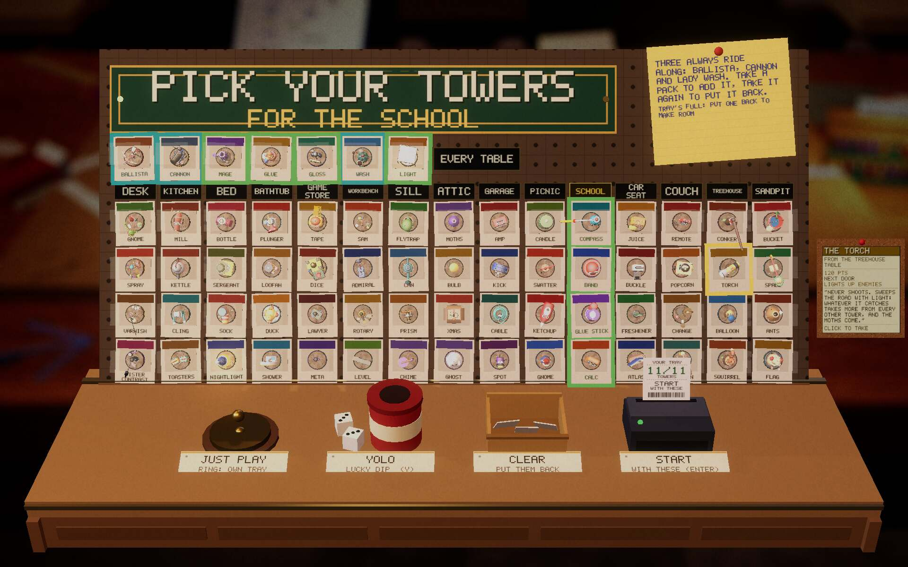
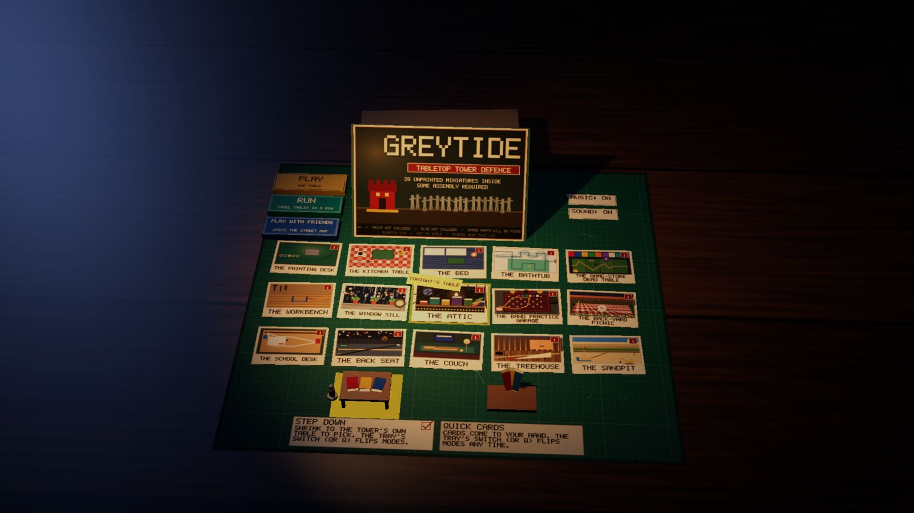
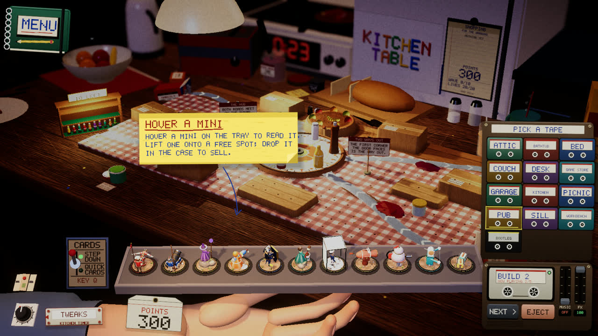

Devlog ·
The owner played the live build for an evening, and four fixes landed within the hour each
A sticky note that read like a form, two mystery postcards, a cassette deck that skipped to the wrong tapes and a clipped label were all found by looking, and a hidden track was made from a description of a sound and our own words.
In the evening the owner played the published build and sent screenshots. Each one became an issue within minutes, and each was merged within about an hour.
A note that was a form
The tower wall is the rack where the player picks a tray of towers. Its pinned sticky note had the old flat instruction line pasted onto it: three tower names, dashes on lines of their own, and the words "choose 0 more". The owner's remark was short: the note did not look right.
The worker on issue 567 rewrote it as two short pieces in the game's own voice. The first says three towers always ride along and that taking a pack adds it and taking it again puts it back. The second is either "Room for N more" or "Tray's full: put one back to make room", and never a bare zero.
The owner's screenshot also showed the hover sheet, the corkboard that explains a tower, opening on top of the rack and covering the pack being hovered. It now sits beside the rack.

The worker's first shots were wrong too: tiny text on the bigger paper, then, in a 16:10 capture, a sheet clipped at the screen edge because the frame check used the window's shape while the capture used another. The check now takes the shape as an argument.
Two postcards that were not postcards
On the start screen, two tables seemed to show a 3D model where a card should be, with no title.
The worker on issue 568 reproduced the screenshot and then dumped the scene hierarchy to see what the objects were. They were not postcards. They were the Step Down and Quick Cards mode switches, left at the position they had when the table cards made two rows. Fifteen tables now make three rows, and the cards had grown over them. The worker shifted the switches and their tags by a row count and added a table-check item for the cards (size, corners, stamp, title, clearance). It passes on all 17 tables.

A deck that skipped to the wrong tape
The cassette deck's NEXT button reached only two tracks, the old generic pair. The owner asked for NEXT to step through the table's own tracks, and for some way to pick another table's soundtrack.
The cause was in the code: NEXT called the old theme-skip, which knows nothing about the five build and five wave tracks each table has. The worker on issue 569 made NEXT walk the table's own tape and added EJECT, which opens a shelf of 13 cassettes: 12 tables plus a bootleg tape for the old pair. The choice is remembered per table.
The first deck label drew the title as tiny wrapped text, so the tape prefix was dropped. The worker verified by log with music at volume zero: five NEXT presses gave five different build tracks and then wrapped, a called wave gave the wave set, and a restart remembered the pick.

The same hour, the worker on issue 571 fixed the soundtrack page, where longer per-table titles ran off the cassette label. Titles shrink and then wrap, and the genre line got the same rule after its first screenshot showed it clipped too.
A track made from a description
The owner also asked for a hidden bootleg track in the style of mid-nineties UK jungle: chopped breakbeats, a deep sub-bass, horn stabs, and a fast half-sung ragga toast over it. The style is free. The issue was explicit that no existing melody, hook, lyric or title may be reproduced, nothing sampled, and no artist or song named in a prompt. The brief described a sound; the lyrics were written for the game.
The worker on issue 576 rendered eight seeds with the local music model, about 50 seconds each. It could not listen, so it measured. Transcribing the full mix invents filler over music, so it separated the voice from each take and transcribed the voice alone. Takes that sang other words, vocalised or beeped were rejected. Two, seeds 576004 and 576007, sing only the game's lines, some misheard and some with filler, and became the bootleg tape's two tracks, loudness-matched within 0.4 dB of the workbench set.
Every take missed the old brightness gate slightly, so the jungle gate became 3.5 percent.
What nobody has checked yet
- Nobody has listened to the jungle tracks. Whether the words are intelligible, and whether the second take's end, 8.7 dB louder than its start, loops cleanly, is open.
- The soundtrack page's heading for hidden tracks is a separate follow-up (issue 577).
- The wall note's pick-best automation default was not re-run, and the cassette deck was not tried by ear, with a real mouse, or in the web build.
- A deliberately failing postcard has not been tried against the new check, and the start screen was not tested in the web or Windows builds.
- The soundtrack page was tested in one browser engine only.